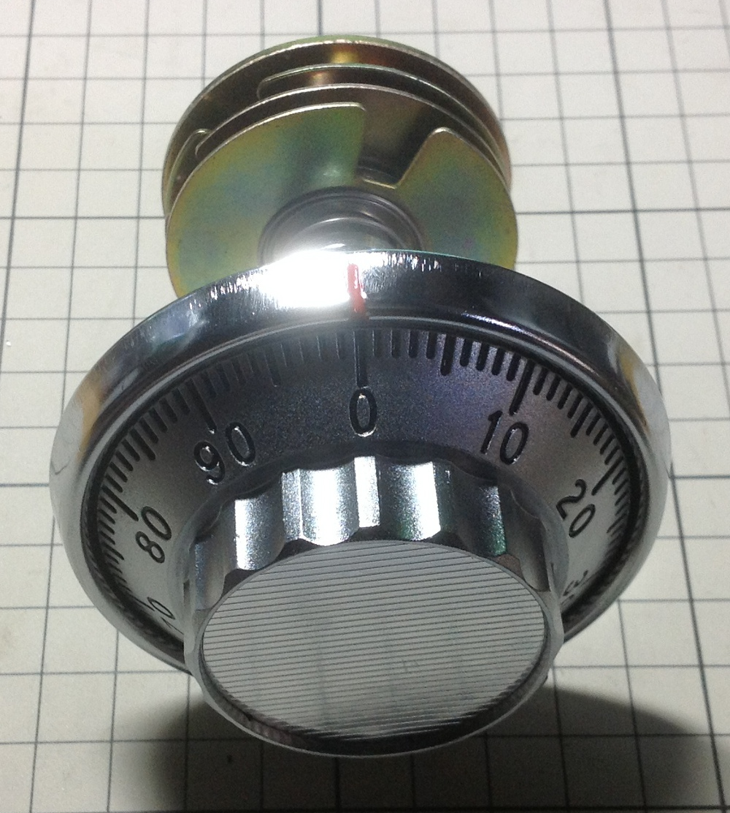
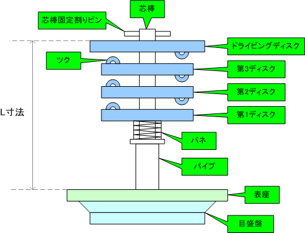
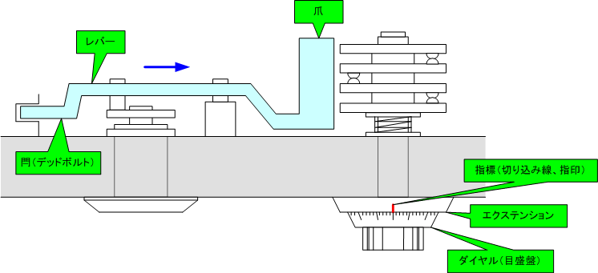
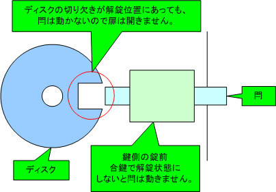
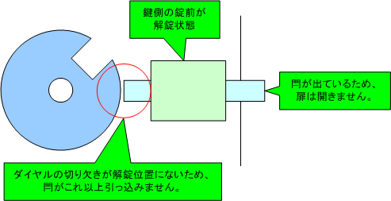
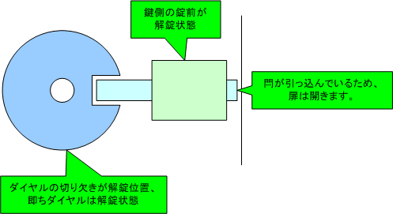
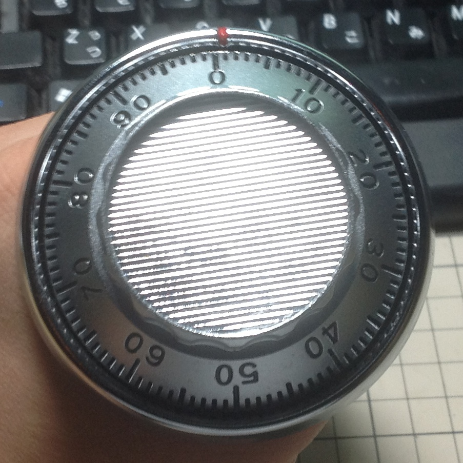

固定ダイヤル錠とは
固定ダイヤル錠（固定変換ダイヤル錠）は、日本の家庭用耐火金庫で広く使用される機械式の錠前です。0〜99の目盛りが刻まれたダイヤルを、決められた番号と手順で回転させることで開錠します。
電子錠と異なり電源不要で、適切にメンテナンスすれば数十年以上使用可能です。番号の組み合わせは工場出荷時に設定され、通常は変更できません（固定式）。4枚座の場合、理論上の組み合わせは100⁴＝1億通りとなります。
正しい操作手順（右回転→左回転の交互）と、各番号での正確な通過回数が両方揃って初めて開錠する仕組みです。
固定ダイヤル錠はダイヤル錠の中でもっともシンプルな構造を持ち、それほど高い安全性は持ちません。

固定ダイヤル錠の構造

主要部品
- 目盛盤（つまみ）：0-99の目盛りが印字された操作部、直径が大きいほど高級
- 表座（指標つき台座）：赤い指標または切り込み線付きの台座、基準位置を示す
- 第1〜第3ディスク：各ディスクにゲート1個とツク2個を配置（第2・第3ディスク）
- ドライビングディスク（駆動座）：目盛盤と芯棒で直結、他より大きく、ツク1個
- 芯棒：ドライビングディスクのみと接続、パイプ内を通る中心軸
- テンションスプリング：各ディスクを密着させ、ツク同士の接触を保つ
- L寸法：表座からドライビングディスクまでの距離、扉厚より大きく必要
芯棒を介してドライビングディスクのみが目盛盤と直結し、最初にドライブされます。 他ディスクはテンションスプリングで密着し、各ディスクのツク（突起）同士が当たりながら順次回転を伝達。バネが弱くなるとツクが空回りして故障の原因となります。4つのゲート（切り欠き）が一直線に揃うと閂を引き込んで開錠します。

開錠メカニズム
固定ダイヤル錠が開錠する理由は、4つのゲート（切り欠き）が一直線に揃うことでフェンスという部品が落ち、閂（かんぬき）を引き込めるようになるからです。

ゲートが揃っていないため、フェンスが上がったまま。閂が出て扉は開かない。

一部のゲートは合っているが、すべてが揃っていないためフェンスは落ちない。

4つすべてのゲートが一直線に揃い、フェンスが落ちて閂を引き込める。
💡 重要：正確な手順で操作することで、4つのディスクのゲートを順次正しい位置に配置し、最終的に一直線に揃えることができます。これが「正規の開錠」の原理です。
操作法
固定ダイヤル錠（4枚座）は、第1〜第3ディスク＋ドライビングディスクの4つのゲートを一直線に揃えるとフェンスが落ち、閂を引き込めます。
- ① 右（R）に4回以上まわして、1番目の数値で停止
- ② 左（L）に3回まわして、2番目の数値で停止
- ③ 右（R）に2回まわして、3番目の数値で停止
- ④ 左（L）に1回まわして、4番目の数値で停止
⚠️ 重要：「○回まわす」はその番号が指標を○回通過するという意味です。「0」を○回通過させるのではありません！
例：「右に4回まわして10で停止」= 10が指標を4回通過してから停止（3回通り過ぎて、4回目はピッタリ止める）。回し過ぎたらやり直し。
右は時計回り、左は反時計回りです。ダイヤルの目盛りは時計回りに増えるので、右に回すと指標の下の数字は小さくなり、左に回すと大きくなります。
4つの番号を合わせたら、最後に鍵を挿して右（時計回り）に回し、扉を開けます。

なぜこの回数なのか
ドライビングディスクのツクは、反対向きに回し始めてからほぼ1回転して、ようやく第3ディスクのツクに反対側から当たります。第3ディスクが第2ディスクを、第2ディスクが第1ディスクを拾うときも同じです。
本ツールの模型（ツクの厚み4目盛り）では、左に回して止めた状態から右へ回すと、第3・第2・第1ディスクは97・193・289目盛りで動き出します。
右4回目で止めれば、どの状態から始めても3枚とも拾い切れます。続く左3回目では第2ディスクまで、右2回目では第3ディスクまでを動かし、先に合わせたディスクには触れません。最後の左1回目はドライビングディスクだけを動かします。回し過ぎると、合わせたディスクを拾って動かしてしまうので、最初からやり直しです。
施錠のときに右へ4回転以上回す理由
扉を閉めただけでは、4つのゲートは揃ったままです。番号を知らなくても、鍵だけで開いてしまいます。
金庫の取扱説明書には、施錠のあとダイヤルを右に4回転以上回すように書かれているものがあります（回さないと番号合わせが容易になり、開けられやすくなる）。シミュレーターでは、開けたあと「閉める」で確かめられます。
組み合わせの数
番号は4つで、名目の組み合わせは100⁴＝1億通りです。ただし、正規の手順で開けられる番号には条件があります。たとえば2番目の番号が1番目に近すぎると、左3回目で止める前に第1ディスクを拾ってしまいます。
本ツールの模型（ツクの厚み4目盛り）では、前の番号から次の番号まで回す向きに数えた目盛り数の上限が、STEP2で88、STEP3で92、STEP4で96です。 ゲートがぴったり揃う組み合わせは77,721,600通り（約78%）です。また、ゲートは±1目盛りずれても開くので、隣の番号に合わせても開くことがあります。
ダイヤル
指標の数字
ダイヤルをドラッグするか、ボタンを押し続けて回します。ダイヤルを選んでから←→キーでも回せます（Shiftで10目盛り）。右に回すと数字は小さくなります。
手順ガイド
番号カード
ガイドは取扱説明書の手順をなぞって回数を数えます。開くかどうかは、ガイドではなくゲートの位置で決まります。
内部の動き
鍵を回したときの動き
鍵を回すと、フェンスの爪が上から下りてきます。4枚のゲートがすべて爪の下にあれば、爪が落ちて閂を引き込めます。
ディスクの1周（中央の線がフェンス）
- ゲート（切り欠き）
- ツク（押される側）
- ツク（押す側）
中央の線がフェンスの位置です。各ディスクの橙色のゲートが線の上に揃うと、フェンスが落ちます。上下に並ぶツクが触れると、上のディスクが下のディスクを押して一緒に回します。
自動実演
左に回して止めた状態から、模型を実際に1目盛りずつ回します。
振り返り
リセット（または練習・自動実演）のあとの操作を、模型で回し直して並べます。開かなかったときは、ずれたディスクを最後に動かした操作を示します。
まだ操作がありません。